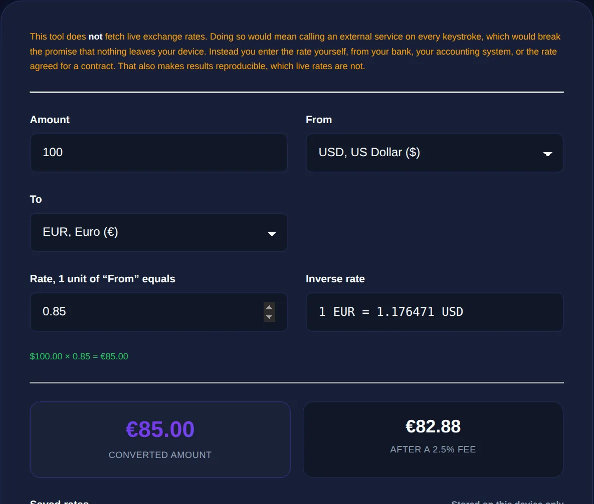

How Currency Conversion Works (and Why Rates Keep Moving)
Converting currency means multiplying an amount by the exchange rate between two currencies; rates move constantly with supply and demand, and the rate you actually get is usually a little worse than the mid-market rate because of a margin or fee.
By Mubasher Hussain · Published 2026-07-27 · Updated 2026-10-08 · 1111 words · about 5 minute read
Converting currency is arithmetic, multiply an amount by an exchange rate, but the interesting part is the rate itself, which changes constantly and is rarely the rate you actually get when you exchange money. Understanding what an exchange rate is, why it moves, and where hidden costs creep in can save you real money. The Currency Converter handles the maths, and this article explains what is going on behind the number.
The core calculation is simple: to convert 100 units of one currency into another, multiply by the exchange rate between them. The subtlety is entirely in which rate you use, because there is more than one, and the difference between them is where costs hide.
What an exchange rate is
An exchange rate is the price of one currency expressed in another, how many units of currency B you get for one unit of currency A. It exists because currencies are traded against each other on global markets, much like any other commodity, and their relative prices are set by supply and demand. When people and institutions want more of a currency, its value rises against others; when they want less, it falls. The rate you see quoted is a snapshot of this constantly-moving market price.

Why rates keep moving
Exchange rates change second by second because the forces behind them never stop shifting. Interest rates set by central banks, inflation, economic growth figures, political events, trade flows and market sentiment all feed into how much a currency is worth relative to others. The foreign-exchange market is the largest and most liquid financial market in the world, trading around the clock, so prices update continuously. This is why a converted amount you noted this morning may be slightly different this afternoon, and why any conversion is only accurate for the moment its rate was captured.
Published or "mid-market" rates are the midpoint of the market. When you actually exchange money, at a bank, a bureau, or with a card abroad, you usually get a slightly worse rate, plus possibly a fee. That gap is how the provider makes money.
The mid-market rate, spreads and fees
The rate quoted in the news and by converters is typically the mid-market rate: the midpoint between what buyers and sellers are offering. It is the fairest reference point, but it is not what you get at the counter. Providers apply a spread, buying the currency from you at a bit less and selling at a bit more than the mid-market rate, and may add an explicit fee on top. A conversion that looks like it should give you 100 might in practice give you 96 or 97 once the spread and fees are taken. Knowing the mid-market figure lets you judge how good or bad a real offer is.
- Mid-market rate: the fair reference midpoint; what converters usually show.
- Spread: the margin a provider adds by giving you a slightly worse rate.
- Fees: explicit charges on top, fixed or percentage-based.
- Card surcharges: some cards add a foreign-transaction fee on overseas spending.
Using conversion to compare and budget
For most everyday purposes, understanding a price abroad, budgeting a trip, comparing an international purchase, the mid-market rate is exactly what you want, because it tells you the underlying value without a provider's margin muddying the picture. When you convert to plan a budget, it helps to build in a small buffer for the spread and fees you will actually face, and to remember that the rate may drift before you travel. Working out the percentage difference between the mid-market rate and a quoted offer, with a percentage calculator, is a quick way to see how much a provider is really charging.
Convert between currencies using exchange rates, entirely in your browser, ideal for understanding prices, comparing offers and budgeting.
A note on accuracy and timing
Because rates move continuously, any currency conversion is a point-in-time estimate rather than a guaranteed figure. For casual understanding, is this restaurant expensive, roughly what does this gadget cost in my currency, a recent rate is perfectly adequate. For a large or time-sensitive transaction, check the rate close to when you will actually exchange, and remember that the amount you receive will reflect the provider's spread and fees, not the clean mid-market number. Treating conversions as close estimates rather than exact promises keeps expectations realistic.
Getting the best real-world conversion
Since the rate you are quoted is rarely the mid-market rate, a little awareness can noticeably reduce what you lose to spreads and fees. Different ways of exchanging money carry very different margins: airport bureaux and hotel desks tend to offer the worst rates, banks are often middling, and some specialist services and cards track close to the mid-market rate with a small transparent fee. Dynamic currency conversion, where a foreign card machine offers to charge you in your home currency instead of the local one, almost always uses a poor rate and is best declined in favour of paying in the local currency.
The practical routine is to know the mid-market rate before you exchange, so you can judge any offer against it, and to compare the total cost including both the rate margin and any fee rather than looking at just one. A deal advertising "no fees" may bury its charge in a worse rate, while one charging a small explicit fee on a near-mid-market rate can work out cheaper overall. For larger amounts the difference is significant enough to be worth a few minutes of comparison. A converter set to the mid-market rate is your reference point for all of this: it tells you the fair value, against which you can measure how much any provider is really charging. Treat that fair value as the benchmark, decline conversions that hide their margin, and pay in local currency where you can, and you will consistently keep more of your money when moving between currencies.
To sum up: currency conversion multiplies an amount by an exchange rate, but that rate is a living market price that moves constantly and comes in more than one flavour. The mid-market rate is the fair reference; the rate you actually get includes a spread and often a fee. Use a converter to understand values and compare offers, build a buffer into travel budgets, and always treat a conversion as accurate only for the moment its rate was taken.